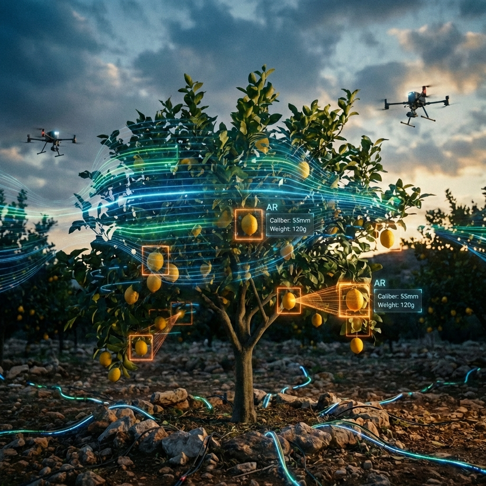
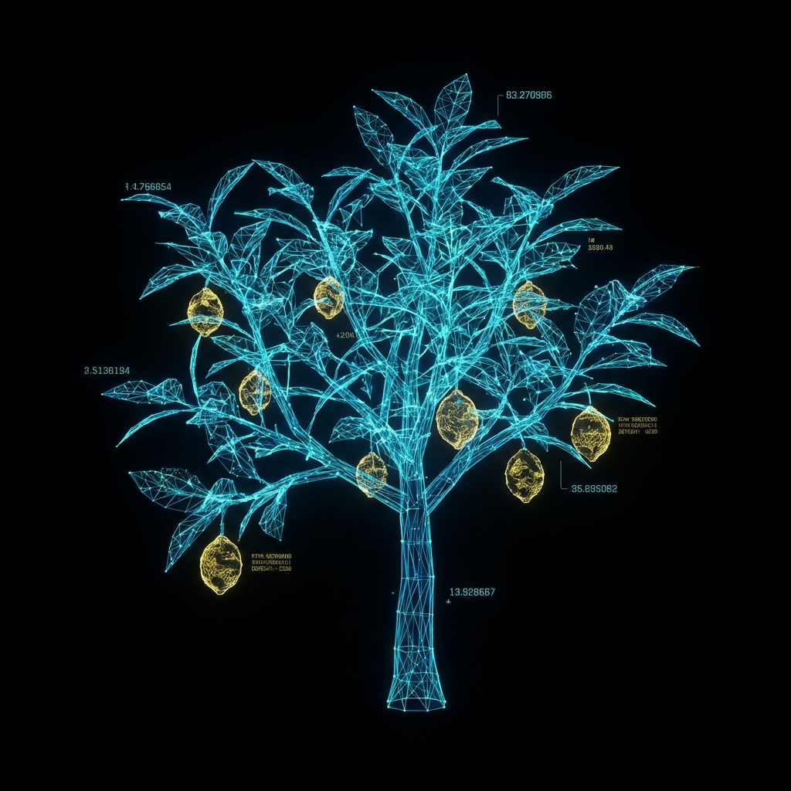
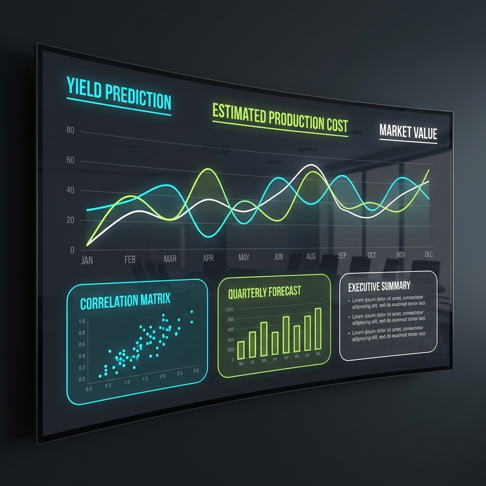

Citrus Limon • Digital Twin Specification
Deep learning analysis of ground-level imagery for precision metrics. Our Real-time Fruit Detection algorithms perform granular estimation of caliber and weight.
Complementing this, aerial inventory via drone and satellite constellations analyzes NVDI for health inference and canopy shape for biomass estimation.

A physiologically realistic simulation of lemon trees and their environment. It enables reliable Yield Prediction and optimization of fertigation strategies.
The system automatically adapts to climate shifts and logistical contingencies, providing a robust decision-support framework.

From molecular analysis to market logistics. We optimize for the extraction of Essential Oils, Juice Concentrate, and Pectin.
Data synthesis aligns harvest logistics with real-time Market Demand Analysis, automating the path from field to processing.
